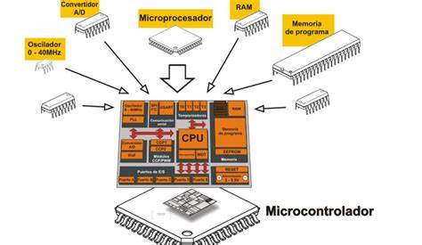

¿Qué son los microcontroladores?
Los microcontroladores son dispositivos electrónicos que contienen un procesador, memoria y periféricos de entrada/salida. Se utilizan en una variedad de aplicaciones, desde electrodomésticos hasta sistemas de control industrial.
Características de los microcontroladores
Los microcontroladores son conocidos por su bajo costo, bajo consumo de energía y su capacidad para realizar tareas específicas. A continuación se presentan algunas características clave:
| Característica | Descripción |
|---|---|
| Procesador | Unidad central de procesamiento que ejecuta instrucciones. |
| Memoria | Almacenamiento para datos y programas. |
| Periféricos | Dispositivos de entrada/salida que permiten la interacción con el entorno. |